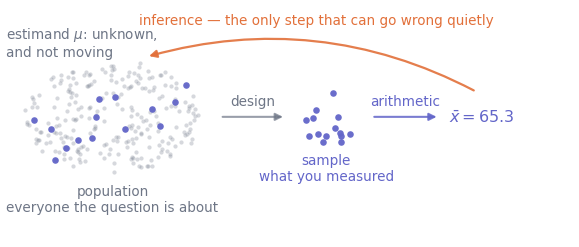
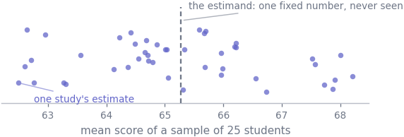
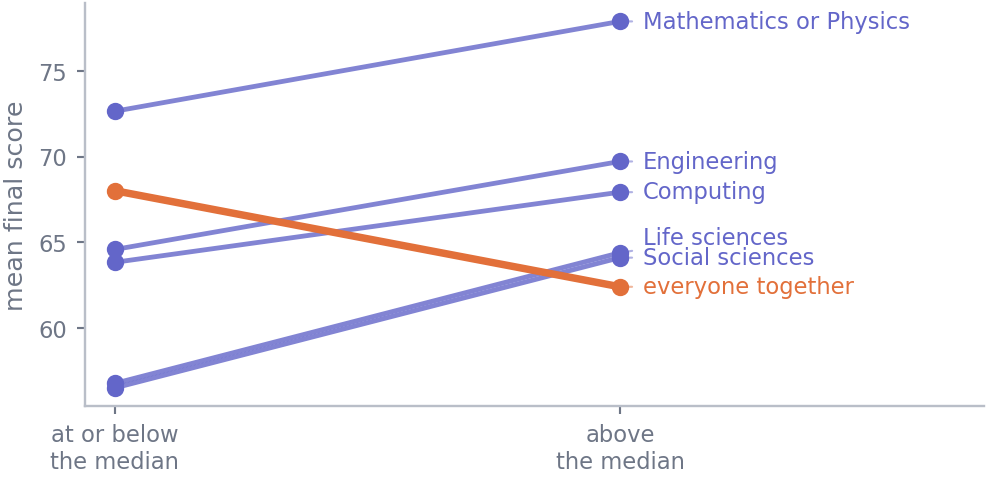

S1 · StatisticsReading: 7 pagesWith practice: ≈ 1.5 hoursAssumes: nothing — you can start here
Why this unit is here
Statistics is usually taught as a menu of procedures, and it is easy to come away thinking the skill is picking the right one. It is not. The procedures are the easy part; a library computes them for you in one line.
The hard part is knowing what you are asking, about whom, and what the answer entitles you to say. Get that wrong and no amount of correct arithmetic saves you — you get a confident, reproducible, well-presented answer to a question nobody asked. This unit gives you the vocabulary for stating a statistical question properly, and one habit: write the question down before you touch the data.
Before you start
Nothing statistical. You should be able to read a table of data and say what one row of it means, work out an average, and read a percentage.
If you also want to run the code rather than read it, P8 is as much pandas as you need. Nothing in the explanations depends on it.
Quick check. A table has one row per student, with columns for their prior background, hours of practice and final score. Five students scored 58, 62, 71, 64 and 65. What is their mean score, and what does one column of that table represent?
TipShow the answer
The mean is \((58 + 62 + 71 + 64 + 65)/5 = 320/5 = 64\).
A column is one variable — one thing measured on every student. A row is one unit — everything measured on one student. Almost every confusion later in this track is really a confusion about which of those two you are talking about.
The idea
Here is a question of the kind people actually ask:
Does practice help?
It sounds answerable. It is not, and why not is the whole of this unit.
Help whom? The students in this table, or students in general? Help how much, measured how? Final score, pass rate, something else? Help in what sense — do people who practise more tend to score higher, or would a given person score higher if they practised more? Only the second of those is about cause.
Underneath all three is the gap statistics exists to manage: you have a table, and the claim you want to make is almost never about the table.
Throughout these notes we use one dataset: a synthetic record of a previous cohort who worked through this material.
import pandas as pdcohort = pd.read_csv("../data/cohort.csv")print(f"{len(cohort)} rows, {cohort.shape[1]} columns")cohort.head(3)
240 rows, 7 columns
student_id
background
diagnostic_score
hours_practice
final_score
completed
started_on
0
S0001
Mathematics or Physics
89.1
12.9
83.6
True
2026-09-23
1
S0002
Life sciences
42.4
22.8
56.6
True
2026-09-25
2
S0003
Engineering
68.4
1.7
58.5
True
2026-09-25
Two hundred and forty students — and not one of them is the point. They have finished, and nothing you compute will change their marks. What you care about is students like them, including the ones arriving next year. Those rows are interesting only as evidence about a larger group you cannot see.
The gap has a standard vocabulary, worth learning properly.
The population is the entire group your question is about. Here: something like students starting an MSc in data science from a mixed set of prior backgrounds. Note that you had to decide that. It was not in the file.
The sample is the set of units you actually measured — the 240 rows.
An estimand is the number you want, defined on the population: say \(\mu\), the mean final score across that whole population. It is one fixed number, and short of measuring every single unit you never see it.
An estimate is the number you compute from the sample — here \(\bar{x} = 65.3\), the mean of the 237 rows the worked example keeps. You do see it, and it is not \(\mu\).

Figure 28.1: The shape of every statistical question. Arithmetic on a sample is safe and mechanical. The arrow that goes back — from the number you computed to a claim about everyone — is the one that can be wrong while everything on the page looks fine.
That picture splits the subject in two. Describing your sample is arithmetic: the mean of the 237 usable scores is 65.27, and no assumption is needed to say so — S2 and S3. Inferring something about the population is a claim, it depends on how the sample was collected, and it is only ever true with a margin attached. Nearly everything from S4 onwards exists to make that margin honest.
The mechanics
Four things a usable question names
A question is ready to work on when you can name all four of these. Until then you cannot choose a method, and choosing one anyway wastes a week.
The unit. What does one row represent — a student, a submission, a week-of-a-student? Get this wrong and every count you report is wrong.
The population. Which units is the answer about? Not “the data”: the group you intend to speak about.
The estimand. A number defined on that population, stated precisely enough that someone else would compute the same thing. “How well students do” is not one; “the mean final score” is.
The design. How did units get from the population into your table? This is the part people skip, and it decides which conclusions are defensible.
One legitimate sharpening of our vague question:
Among students arriving from a life sciences background (population), taking a student as the unit, what is the difference in mean final score between those who practised more than the group median and those who practised no more than it (estimand)? The data are one past cohort’s recorded outcomes, with nobody assigned to practise (design).
Even the tie rule had to be stated: one life-sciences student practised for exactly the group median, and a definition saying “more” and “less” leaves them in neither group.
Longer, uglier, answerable — and it makes visible, in that last clause, something the original question hid.
Parameters and estimates
The convention is Greek letters for the population and Latin for the sample.
The same quantity, in the two places it can live
Quantity
Population (parameter)
Sample (estimate)
mean
\(\mu\)
\(\bar{x}\)
standard deviation
\(\sigma\)
\(s\)
proportion
\(p\)
\(\hat{p}\)
A convention rather than a law — you will meet \(\hat{\mu}\) and \(\hat{\theta}\) too, where the hat means “estimated from data” — but the distinction is real and load-bearing. The parameter is fixed and, short of a census, unknown; the estimate is known and varies. Draw a different 25 students and you will almost certainly compute a different mean; the population mean does not move, because it never depended on who you happened to ask.

Figure 28.2: Forty-five imaginary studies, each measuring 25 students from the same population and reporting their mean score. The dashed line is the population mean. It does not move; the dots do. Every real study you will ever read is one dot, reported without the rest of the picture.
That spread is not a defect in anyone’s work. It is what sampling is, and S7 puts a number on it.
What kind of variable is it?
The type of a variable decides which arithmetic on it means anything.
Five of the cohort’s columns by type
Column
Type
What that permits
final_score
quantitative, continuous
mean, differences, spread
background
categorical, nominal
counts, proportions, mode
completed
categorical, binary
counts, proportions
started_on
date
ordering, gaps, counts per day
student_id
label
nothing — it is a name, not a number
Quantitative splits into continuous and discrete. A count — submissions, faults, siblings — is discrete: nothing lies between 3 and 4. Time, mass or a score on a fine scale is continuous, and the distinction drives the choice of model in S6. It is about the quantity, not the file: final_score is recorded to one decimal, so the stored values are strictly discrete, but the thing measured varies continuously.
Categorical splits into nominal and ordinal. Nominal categories have no order — asking whether Computing is “more than” Engineering is meaningless. Ordinal ones are ordered but not evenly spaced: a satisfaction rating, a degree classification. A median is safe there; a mean assumes the gap from 1 to 2 matches the gap from 4 to 5, which nobody has checked and which is usually false. It is done constantly anyway; do it knowing that you are.
Where the sample came from
Three designs, in decreasing order of how much they let you say. A census measures every unit, so there is no inference left to do — rare, and usually impossible. A simple random sample gives every unit the same chance of selection, and is what the rest of this track assumes when it says “random”. A convenience sample is whoever was available: the people who replied, the users who opted in, the cohort whose records were kept.
“Random” alone is not enough. A design that samples one subgroup with probability 0.9 and another with probability 0.1 is perfectly random and systematically skewed; such designs are legitimate, and the analysis then has to weight each unit by the reciprocal of its selection probability. And note what even equal chances promise: not that any one sample resembles the population, but that the procedure has no systematic preference and that the variability is quantifiable.
Two consequences, both denied in practice constantly.
Sample size does not fix a bad design. If the mechanism that put units in your table is related to what you are measuring, more data makes the estimate more precisely wrong. A 1936 US election poll collected 2.4 million responses and called the wrong winner, beaten by a survey of a few thousand: two million of the wrong people is still the wrong people.
Observational is not experimental. In an experiment the investigator assigns the treatment — who practises more is decided by a coin, not by the student — so a difference in outcome can be laid at the treatment’s door. Our cohort is observational, and students who chose more hours differ from those who chose fewer in every other way too.
Worked example
One vague question, three precise ones, two opposite answers.
Every analysis on this dataset starts by deciding which rows are usable. The file has three planted defects, described in P9.
print(f"rows in the file {len(cohort)} usable {len(usable)} "f"excluded {len(cohort) -len(usable)}")
rows in the file 240 usable 237 excluded 3
One row has no recorded score, one has no background, and one scores 187 out of 100. Every unit in these notes that filters on score and group analyses these same 237 students.
Now three sharpenings of does practice help?
Question A — across the whole cohort. Split the 237 at the median number of hours — above it against at-or-below it — and compare mean final scores.
split = usable["hours_practice"].median()more = usable[usable["hours_practice"] > split]["final_score"]less = usable[usable["hours_practice"] <= split]["final_score"]print(f"median hours of practice : {split}")print(f"practised less n={len(less):>3} mean {less.mean():.2f}")print(f"practised more n={len(more):>3} mean {more.mean():.2f}"f" difference {more.mean() - less.mean():+.2f} marks")
median hours of practice : 15.2
practised less n=121 mean 68.01
practised more n=116 mean 62.40 difference -5.61 marks
The students who practised more scored 5.61 marks lower on average. On this reading, practice looks harmful.
Question B — within each background. The same comparison, and the same tie rule, but each group split at its own median, so students are only ever compared with others who arrived in a similar position.
def practice_gap(frame):"""Above-median students' mean score minus the rest's.""" cut = frame["hours_practice"].median() above = frame["hours_practice"] > cutreturn frame[above]["final_score"].mean() - frame[~above]["final_score"].mean()by_group = usable.groupby("background").apply(practice_gap, include_groups=False)print(by_group.round(2).to_string())
background
Computing 4.10
Engineering 5.14
Life sciences 7.63
Mathematics or Physics 5.24
Social sciences 7.61
In every one of the five groups the above-median students scored higher, by between 4.10 and 7.63 marks. On this reading, practice helps, and helps consistently.

Figure 28.3: The same 237 students, summarised two ways. Each line joins the mean score of a set’s at-or-below-median students to that of its above-median students. The five indigo lines split their own background group at that group’s median; the orange line splits the whole cohort at the overall median (121 students against 116, the three exactly on 15.2 hours counting as at-or-below). Five lines up, one line down.
Both answers are correct arithmetic on the same 237 rows. They point in opposite directions because they answer different questions, and the reason is in the data.
diagnostic_score hours_practice final_score
background
Mathematics or Physics 89.3 8.0 75.3
Engineering 72.4 10.5 67.2
Computing 68.9 12.5 65.9
Life sciences 47.3 22.6 60.5
Social sciences 39.5 27.4 60.2
Students from Mathematics or Physics start furthest ahead and practise least; those from life and social sciences start furthest behind and practise most. So Question A compares a mostly-life-and-social-sciences half against a mostly-quantitative half: a comparison of backgrounds wearing the costume of a comparison of practice. Question B holds background fixed and asks the question you meant. The reversal has a name and a large literature, and S12 gives it both.
Question C — would practising more raise your score? This is what a student actually wants to know, and the data cannot answer it. Nobody assigned hours of practice, and whatever made a student choose more of them — anxiety, spare time, having further to go — is unmeasured. Question B is closer to the causal question than Question A, and it is still an association among students who chose their own hours.
Saying so is not a failure of the analysis. It is the analysis.
Try it yourself
Exercise 1 Classify each of these variables as quantitative continuous, quantitative discrete, categorical nominal, categorical ordinal, or a label:
a student’s postcode;
the number of assignments a student submitted;
a satisfaction rating on a scale of 1 (poor) to 5 (excellent);
time taken to complete an exam, in minutes;
degree classification: third, 2:2, 2:1, first.
TipShow the solution
Nominal categorical. A postcode contains digits, which tempts people to treat it as a number, but the arithmetic is meaningless — there is no sense in which AL10 is twice AL5.
Quantitative discrete. A count. Nothing lies between 3 and 4 submissions.
Ordinal categorical. Ordered — 4 really is better than 3 — but the gaps are not known to be equal. The median is safe. The mean is a convention that assumes equal spacing; it is reported everywhere, and it is worth knowing that you are making an assumption when you report it.
Quantitative continuous. If it is recorded to the nearest minute the stored values are whole numbers, but the underlying quantity is continuous and you would model it that way.
Ordinal categorical, for the same reason as (c). Whether the gap between a 2:2 and a 2:1 is the same as the gap between a 2:1 and a first is not a question the scale answers.
Exercise 2 A colleague asks: “Do students who use the discussion forum do better?”
Rewrite it as a question you could work on. Name the unit, the population, the estimand and the design, and then name one conclusion the design will not support.
TipShow the solution
There is no single right answer — that is the point of the exercise — but a usable one names all four. For example:
Unit: one student.
Population: students enrolled on this module in a given year. (If you want to speak about future cohorts, say so, and be ready to defend it.)
Estimand: the difference in mean final score between students who posted at least once and students who never posted.
Design: observational, from the module’s own records; nobody was assigned to use the forum.
What it will not support: that using the forum causes better marks. The students who post are self-selected, and engagement, confidence and available time all plausibly drive both posting and marks. Also worth stating: “at least one post” is a decision you made, not a fact about the world, and the answer may depend on it. Write it down so the choice is visible rather than buried.
Exercise 3 A satisfaction survey is posted on a course forum. Of 900 enrolled students, 180 reply, and their mean rating is 4.2 out of 5.
What population is 4.2 an estimate for?
Name two mechanisms that could make it a poor estimate of the mean rating of all 900.
Would surveying twice as many students the same way fix the problem?
TipShow the solution
Two different things are being run together, and separating them is the point. As a description, 4.2 is the mean rating of the 180 people who replied, and that needs no assumption at all. As an estimate it targets whichever population you nominate — nominate all 900 and 4.2 is an estimate of their mean rating, a biased one unless repliers resemble non-repliers in respect of satisfaction. Bias is a property of how good the estimate is, not of whether it is one. The population it describes for free and the population it is offered as evidence about are different, and that gap is the finding.
Any two of: self-selection — people with strong opinions, in either direction, are likelier to answer; undercoverage — the survey lives on a forum, so students who do not read the forum cannot reply, and forum readers are plausibly more engaged; timing — a survey posted in week 12 misses everyone who dropped out, who are unlikely to have been the satisfied ones.
No. Surveying more people the same way leaves the mechanism intact. The estimate would become more precise and no less biased: a tighter cluster around the wrong number. Only a change of design — chasing non-respondents, sampling from the enrolment register rather than the forum — helps. Note too that the ceiling here is 900: at some point you cannot buy precision with more people at all, and everything left is bias.
Check it in Python
Two claims in this unit are worth checking rather than believing: that the cleaning step removes three rows and no more, and that the reversal is real rather than a slip in the reading.
student_id background hours_practice final_score
17 S0018 Computing 14.3 NaN
102 S0103 NaN 26.4 66.2
188 S0189 Life sciences 23.1 187.0
One missing score, one missing background, one impossible score. Exactly the three defects the dataset documents, and no accidental fourth.
Now the reversal. practice_gap is written once and applied to the whole cohort and to each group, so if the answers differ it is the data doing it rather than two slightly different calculations.
overall = practice_gap(usable)print(f"whole cohort : {overall:+.2f}")print(f"by group : {by_group.min():+.2f} to {by_group.max():+.2f}")
whole cohort : -5.61
by group : +4.10 to +7.63
A reasonable person, having seen the whole-cohort number, would assume the groups agree with it. Assert that, and watch it fail:
assert (by_group <0).all(), (f"whole cohort gives {overall:+.2f}, but "f"{(by_group >0).sum()} of {len(by_group)} groups disagree in sign")
---------------------------------------------------------------------------AssertionError Traceback (most recent call last)
CellIn[11], line 1----> 1assert (by_group < 0).all(), (
2f"whole cohort gives {overall:+.2f}, but " 3f"{(by_group>0).sum()} of {len(by_group)} groups disagree in sign" 4 )
AssertionError: whole cohort gives -5.61, but 5 of 5 groups disagree in sign
That is the check doing its job. The assertion is not wrong about the arithmetic; it is wrong about the world, and it says so loudly instead of letting a false assumption travel unnoticed into a report.
The statement that survives is the one with both halves in it:
assert (by_group >0).all(), "not every group shows a positive gap"assert overall <0, "the whole-cohort gap is not negative"print(f"all {len(by_group)} groups positive (smallest {by_group.min():+.2f}), "f"cohort as a whole {overall:+.2f}")
all 5 groups positive (smallest +4.10), cohort as a whole -5.61
Both facts are true at once, and any sentence you write about this dataset has to be compatible with both.
Common wrong turns
Where this usually goes wrong
Choosing the method before stating the question
“Which test should I use?” is not a first question, it is a fourth. Until the unit, population, estimand and design are written down, no test is the right one — and the answer is often that you do not need a test at all, you need an estimate with an interval on it.
Reporting a sample statistic as if it were the population value
“The mean score was 65.3” describes 237 people. “We estimate the mean score of students on this course at about 65” is a claim about a population. The second needs a margin attached and the first does not; sliding from one to the other is how a description quietly becomes an overclaim.
Believing that a large sample makes a sample representative
Size controls how much your estimate bounces around; the design controls what it is bouncing around. A million self-selected responses estimate the views of self-selecting people very precisely.
Reading an association as a lever
In the cohort, practising more goes with scoring higher within a background. That does not establish that a given student adding five hours gains five marks. For that you would need the hours to have been assigned, or an argument about what else differs — and the argument is the hard part.
Averaging things that do not average
The mean of a satisfaction rating assumes the rungs of the ladder are evenly spaced. The mean of a category code is nonsense dressed as a number. If a variable is nominal, count it; if it is ordinal, prefer the median and say what you did.
Letting the data pick the question
Slicing until something interesting appears and then reporting the slice as though it had been the plan is the commonest way honest people produce false findings. Writing the question down first is a defence precisely because it is dated evidence of what you meant to ask.
Check yourself
Answers are at the foot of the page. Give a reason as well as an answer — if you cannot say why, treat it as wrong.
Which of these is an estimand?
\(\bar{x} = 65.3\), the mean score of the 237 usable rows
The mean final score of all students on this kind of course
The final_score column
The decision to exclude three defective rows
A dataset records, for each of 60 patients, their blood pressure at four visits. A colleague computes a confidence interval for mean blood pressure and reports it as based on “\(n = 240\) independent observations”. What has gone wrong, and what is the unit?
True or false: taking a random sample guarantees the sample resembles the population.
In the worked example, Question A and Question B gave answers with opposite signs. Which one was calculated incorrectly?
You are given the mean of a variable coded 1 = Computing, 2 = Engineering, 3 = Life sciences, 4 = Mathematics or Physics, 5 = Social sciences. It is 2.87. What does that tell you?
TipShow the answers
(b). An estimand is a number defined on the population. (a) is an estimate — computed, known, and liable to differ from one sample to the next. (c) is a variable, not a number. (d) is part of the design and analysis plan, which matters enormously but is not a quantity being estimated.
The unit has been confused with the measurement. There really are 240 rows and 240 measurements — that part is fine. What is wrong is independent: the unit is the patient, so there are only 60 independent units, and four readings from one person carry much less information than four readings from four people. Treating them as 240 independent observations overstates how much you know — S8 shows exactly what it costs.
False, and the distinction is worth being precise about. Random sampling makes the procedure well behaved: over many repetitions it neither favours nor disfavours any part of the population, and the variability is quantifiable. Any single random sample can still be unlucky, and small ones often are. What random sampling rules out is systematic mismatch, not bad luck.
Neither. Both are correct arithmetic and you can rerun them. They answer different questions — one compares students against the whole cohort, the other only against students from the same background — and there is no rule that two different questions must have answers of the same sign. The mistake would be to report either one as “the effect of practice”.
Nothing. The codes label a nominal variable, so their mean depends entirely on the arbitrary order in which the names were numbered. Renumber the backgrounds in reverse alphabetical order and the “mean” changes while the data do not. Count the categories or report proportions instead.
Where this shows up next
S2 takes one variable and describes it properly — centre, spread, shape — and shows why a mean on its own is rarely enough. S3 does the same for two variables at once, which is where the comparison in this unit’s worked example gets its proper treatment. S4 starts building the machinery that turns a description of a sample into a claim about a population. S12 returns to the reversal above, names it, and shows how to spot the pattern before it embarrasses you.